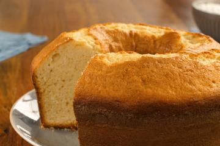

Bolo simples
Um bolo simples fofinho e quentinho com uma xícara de café pode ser tudo o que você precisa numa tarde chuvosa.
E essa aqui é a receita que pode dar isso para você.
Essa receita é bem simples e não leva muitos ingredientes.
A massa branca pode ser usada com recheios de diferentes sabores e irá combinar com todos, já que não tem nenhum sabor dominante mais forte.

Ingredientes (12 porções)
- 2 xícaras (chá) de açúcar
- 3 xícaras (chá) de farinha de trigo
- 4 colheres (sopa) de margarina
- 3 ovos
- 1 e 1/2 xícara (chá) de leite
- 1 colher (sopa) bem cheia de fermento em pó
Modo de preparo — 40 Mins
-
Bata as claras em neve e reserve.
-
Misture as gemas, a margarina e o açúcar até obter uma massa homogênea.
-
Acrescente o leite e a farinha de trigo aos poucos, sem parar de bater.
-
Por último, adicione as claras em neve e o fermento.
-
Despeje a massa em uma forma grande de furo central untada e enfarinhada.
-
Asse em forno médio 180 °C, preaquecido, por aproximadamente 40 minutos ou ao furar o bolo com um garfo, este saia limpo.
Informações adicionais - Dicas para a sua receita de bolo simples
Essa receita de bolo é uma daquelas receitas básicas e deliciosas:
Ele pode ser incrementado com calda de chocolate, recheio de brigadeiro, doce de leite e outras delícias.